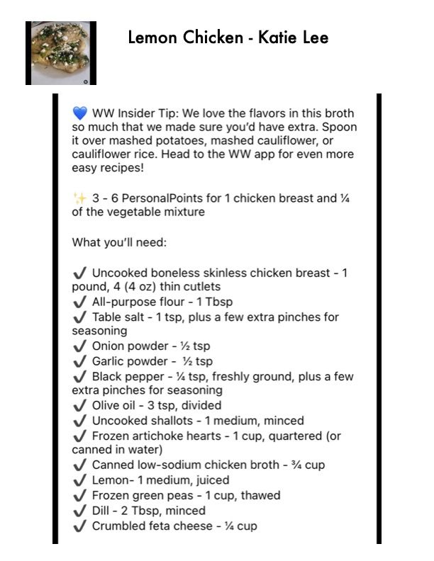

Lemon Chicken - Katie Lee

Original cookbook page 294
Chicken breasts with artichoke hearts, peas, and feta in a flavorful lemon broth. WW Insider Tip: The flavorful broth is perfect spooned over mashed potatoes, mashed cauliflower, or cauliflower rice.
Prep: 15 minutes • Cook: 15 minutes • Total: 30 minutes
Ingredients
- 1 pound boneless skinless chicken breast, 4 (4 oz) thin cutlets
- 1 Tbsp all-purpose flour
- 1 tsp table salt, plus a few extra pinches for seasoning
- ½ tsp onion powder
- ½ tsp garlic powder
- ¼ tsp black pepper, freshly ground, plus a few extra pinches for seasoning
- 3 tsp olive oil, divided
- 1 medium shallot, minced
- 1 cup frozen artichoke hearts, quartered (or canned in water)
- ¾ cup canned low-sodium chicken broth
- 1 medium lemon, juiced
- 1 cup frozen green peas, thawed
- 2 Tbsp minced dill
- ¼ cup crumbled feta cheese
Instructions
- Pat chicken dry. In a shallow bowl, combine flour, salt, onion powder, garlic powder, and pepper. Dredge chicken in the flour mixture to coat both sides.
- Heat 2 teaspoons olive oil in a large sauté pan over medium-high heat. Brown chicken for about 2 minutes per side. Remove chicken from pan and set aside.
- Add remaining 1 teaspoon olive oil to the same pan. Sauté shallots for 2-3 minutes until softened.
- Add artichoke hearts, chicken broth, and lemon juice to the pan. Return chicken to the pan.
- Cover and simmer on low heat for 10 minutes.
- Stir in peas and cook uncovered on medium-high heat for 1 minute.
- Season with additional salt, pepper, and dill. Top with crumbled feta cheese and serve.
Recipe #294 from collection